Matlamat / Goal
Klon repositori kursus, semak PC, pasang opencode, mulakan dalam folder lab dengan model percuma dan kenali lima kawalan yang digunakan sepanjang hari.
Clone the course repository, check the PC, install opencode, start it in the lab folder with the free model and learn the five controls you will use all day.
Peraturan data: guna data sintetik ShopFast sahaja. Model percuma dihoskan di luar negara. Output AI ialah draf yang mesti disemak manusia.
Langkah 0: Pasang Git dan Node.js (jika belum ada)
Buat Langkah 0A dahulu. Jika ketiga-tiga arahan memaparkan versi, terus ke Langkah 1. Jika tidak, pilih 0B (ada hak admin dan winget) atau 0C (tiada admin atau tiada winget), kemudian 0D.
Do Step 0A first. If all three commands show a version, go to Step 1. Otherwise use 0B (admin rights and winget) or 0C (no admin or no winget), then 0D.
Buka PowerShell (Start, taip PowerShell, tekan Enter). Semak sama ada Git dan Node.js sudah dipasang. Jika ketiga-tiga memaparkan versi (node v20 atau lebih baharu), terus ke Langkah 1.
Open PowerShell (Start, type PowerShell, press Enter). Check whether Git and Node.js are installed. If all three show a version (node v20 or newer), skip to Step 1.
git --version node --version npm --version
{kind=link}
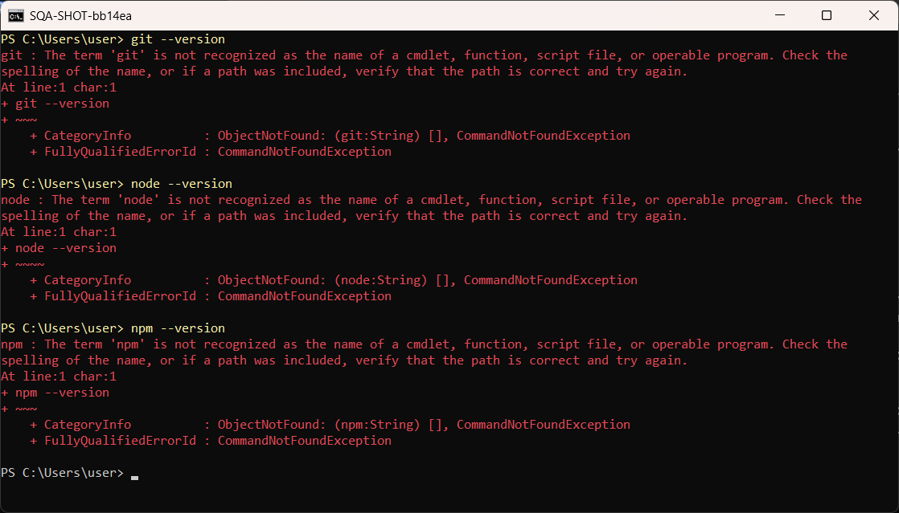
Nampak 'is not recognized'? Pada PC dengan hak admin, pasang kedua-duanya dengan winget. Klik Yes jika Windows meminta kebenaran. Kemudian tutup PowerShell dan buka semula.
Seeing 'is not recognized'? On a PC with admin rights, install both with winget. Click Yes if Windows asks for permission. Then close PowerShell and open it again.
winget install -e --id Git.Git --accept-source-agreements --accept-package-agreements winget install -e --id OpenJS.NodeJS.LTS --accept-source-agreements --accept-package-agreements
Found Git [Git.Git] Version 2.55.x This application is licensed to you by its owner. Downloading https://github.com/git-for-windows/... Successfully verified installer hash Starting package install... Successfully installed Found Node.js (LTS) [OpenJS.NodeJS.LTS] Version 24.x ... Successfully installed
Tiada winget, tiada hak admin, atau winget gagal? Muat turun skrip kursus dan jalankan. Ia memasang Git dan Node.js versi portable dalam folder pengguna anda. Hak admin tidak diperlukan.
No winget, no admin rights, or winget failed? Download the course script and run it. It installs portable Git and Node.js in your own user folder. No admin rights needed.
cd $HOME Invoke-WebRequest https://fth-abr.github.io/sqa-krisa-bengkel/setup/install-prereqs.ps1 -OutFile install-prereqs.ps1 -UseBasicParsing powershell -ExecutionPolicy Bypass -File .\install-prereqs.ps1
{kind=link}
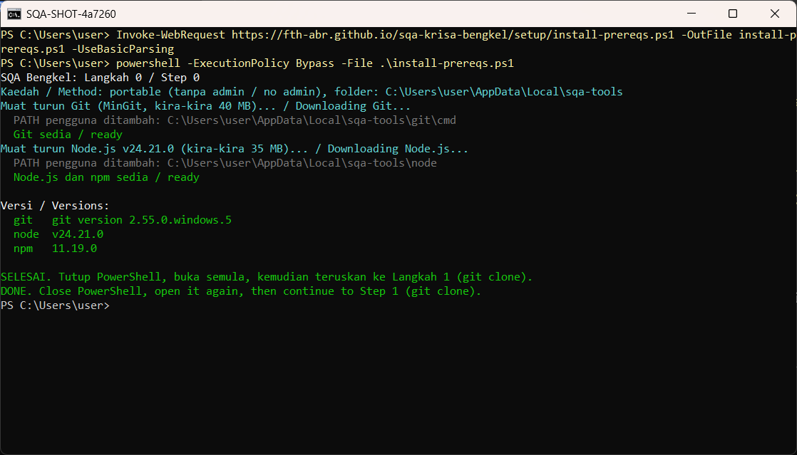
Tutup PowerShell dan buka tetingkap baharu supaya PATH dikemas kini. Semak semula. Ketiga-tiga mesti memaparkan versi sebelum meneruskan ke Langkah 1.
Close PowerShell and open a new window so PATH refreshes. Check again. All three must show a version before you continue to Step 1.
git --version node --version npm --version
{kind=link}
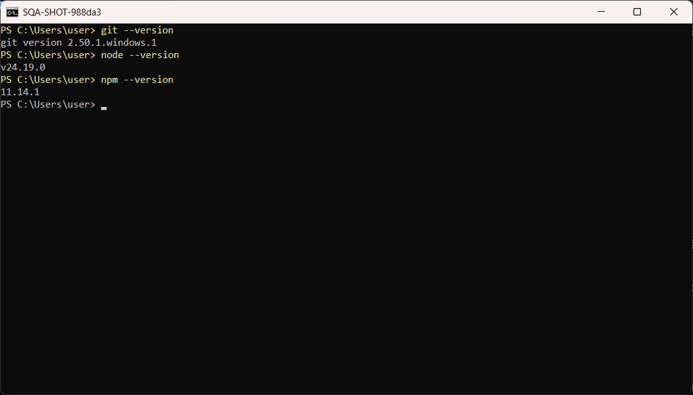
| Masalah Langkah 0 | Tindakan |
|---|---|
| git or node is still not recognised | Close ALL PowerShell windows and open a new one. Still failing: run install-prereqs.ps1 again (Step 0C) |
| winget is not recognised | Skip 0B. Use Step 0C: install-prereqs.ps1 needs no winget and no admin rights |
| Invoke-WebRequest fails (TLS or network) | [Net.ServicePointManager]::SecurityProtocol = 'Tls12' then run it again. Behind a proxy, ask the trainer for the proxy address |
| Windows asks for admin and you have none | Click No, then use Step 0C (portable, no admin) |
Langkah demi langkah dengan tangkapan skrin sebenar
Buka PowerShell, pergi ke folder rumah dan klon repositori kursus.
Open PowerShell, go to your home folder and clone the course repository.
cd $HOME git clone https://github.com/FTH-ABR/sqa-krisa-bengkel.git cd sqa-krisa-bengkel
{kind=link}
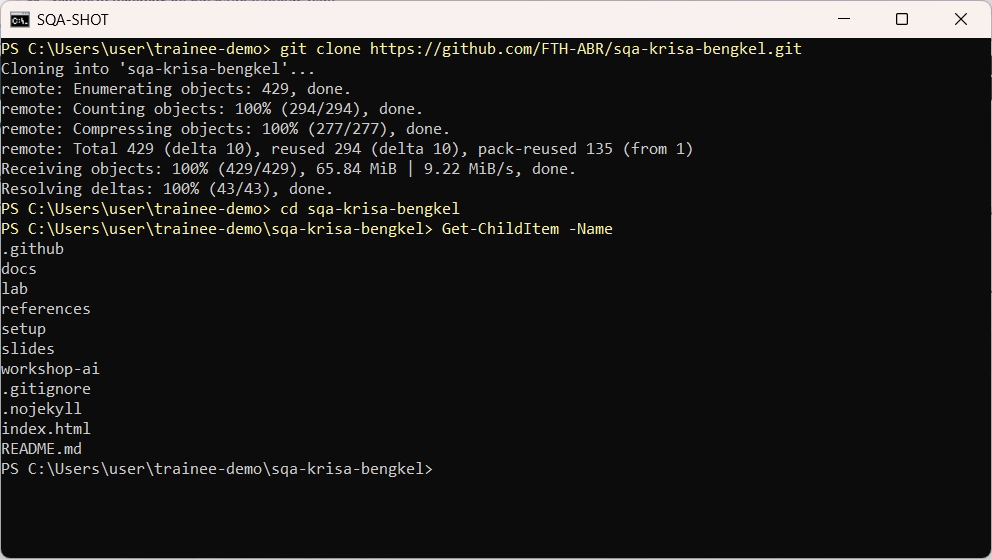
Jalankan semakan kesediaan makmal. Setiap baris mesti OK. Betulkan yang lain menggunakan lajur Fix.
Run the lab readiness check. Every line must say OK. Fix anything else using the Fix column.
powershell -ExecutionPolicy Bypass -File .\setup\check-lab.ps1
{kind=link}
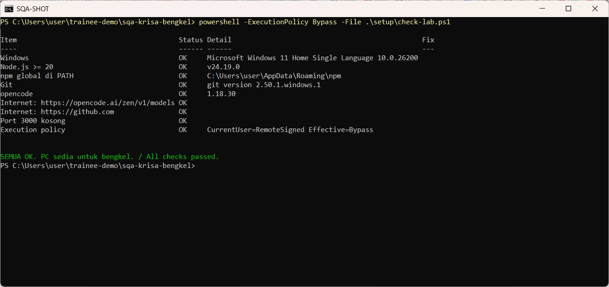
Pasang opencode dengan npm, sahkan versi dan senaraikan model percuma OpenCode Zen.
Install opencode with npm, confirm the version and list the free OpenCode Zen models.
npm install -g opencode-ai opencode --version opencode models opencode
{kind=link}
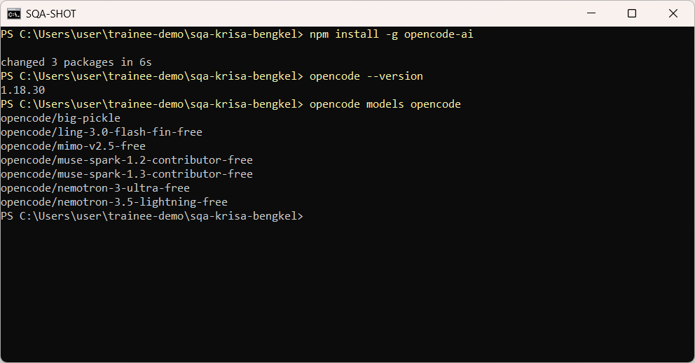
Masuk ke folder lab dan mulakan opencode dengan model percuma Big Pickle. Tiada akaun atau kunci API diperlukan.
Go into the lab folder and start opencode with the free Big Pickle model. No account or API key is needed.
cd lab opencode -m opencode/big-pickle
{kind=link}
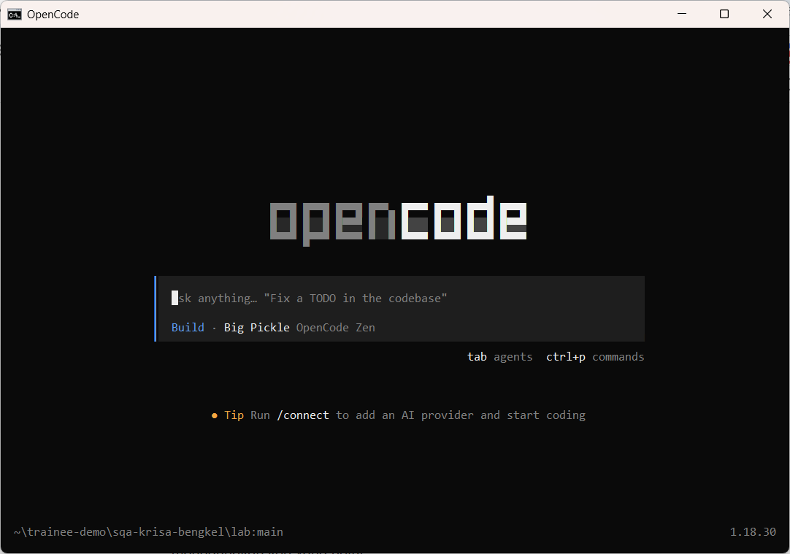
Taip soalan pertama dan tekan Enter. Pembantu membaca folder dan AGENTS.md sebelum menjawab.
Type your first question and press Enter. The assistant reads the folder and AGENTS.md before answering.
Terangkan dalam 3 ayat apakah isi folder lab ini dan fail yang paling penting untuk bengkel.
{kind=link}
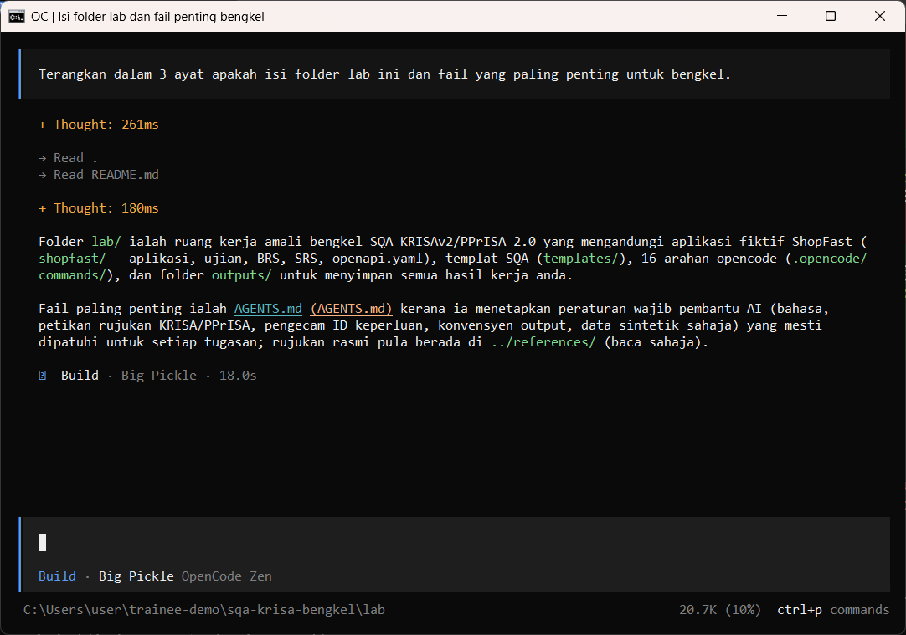
Tekan Tab untuk bertukar antara Build (boleh ubah fail) dan Plan (baca sahaja). Guna Plan untuk semakan.
Press Tab to switch between Build (can edit files) and Plan (read only). Use Plan for reviews.
Tab
{kind=link}
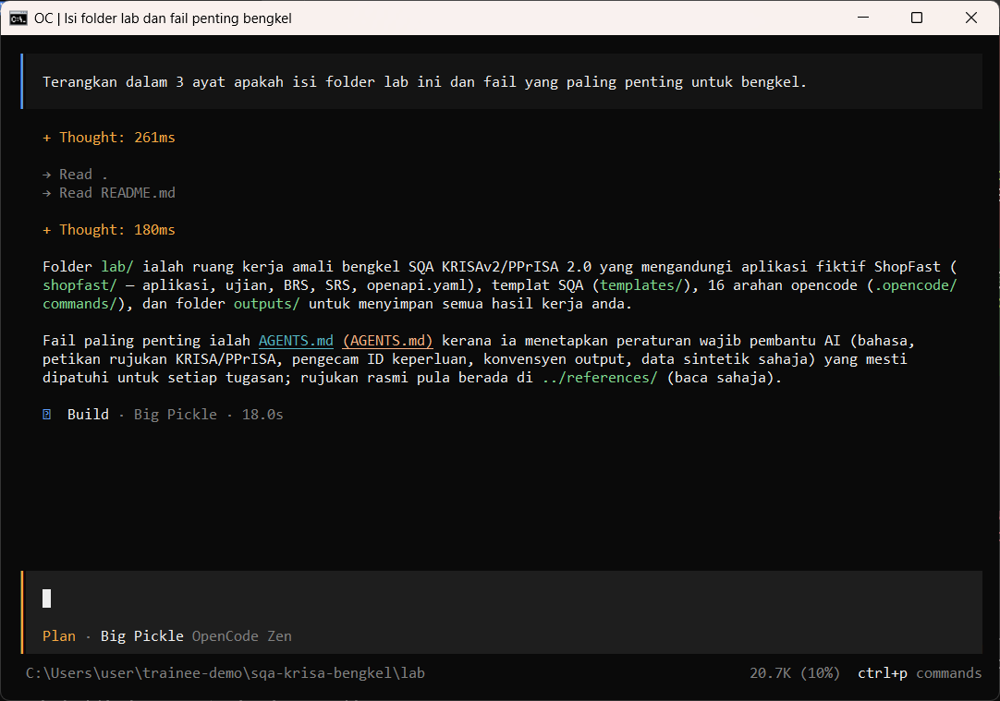
Taip @ dan sebahagian nama fail untuk melampirkan fail pada prompt. Pilih daripada senarai.
Type @ and part of a file name to attach a file to your prompt. Pick it from the list.
@shopfast/docs/inci
{kind=link}
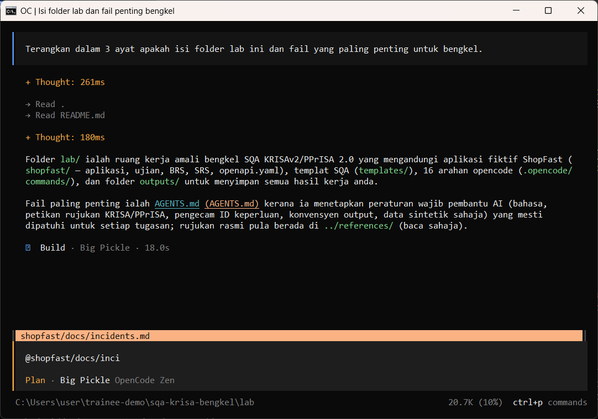
Taip / untuk melihat arahan. Kursus menambah 16 arahan SQA seperti /review-srs dan /testcases.
Type / to see commands. The course adds 16 SQA commands such as /review-srs and /testcases.
/mod
{kind=link}
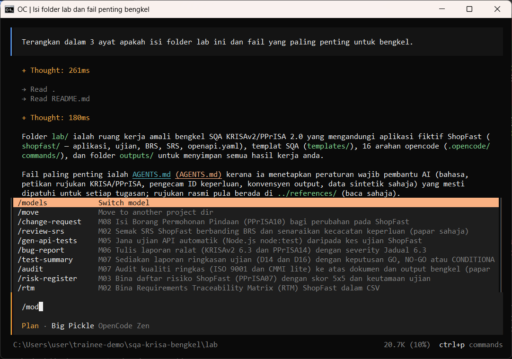
/models memaparkan model percuma. Kekalkan Big Pickle melainkan jurulatih mengarahkan lain.
/models shows the free models. Keep Big Pickle unless the trainer says otherwise.
/models
{kind=link}
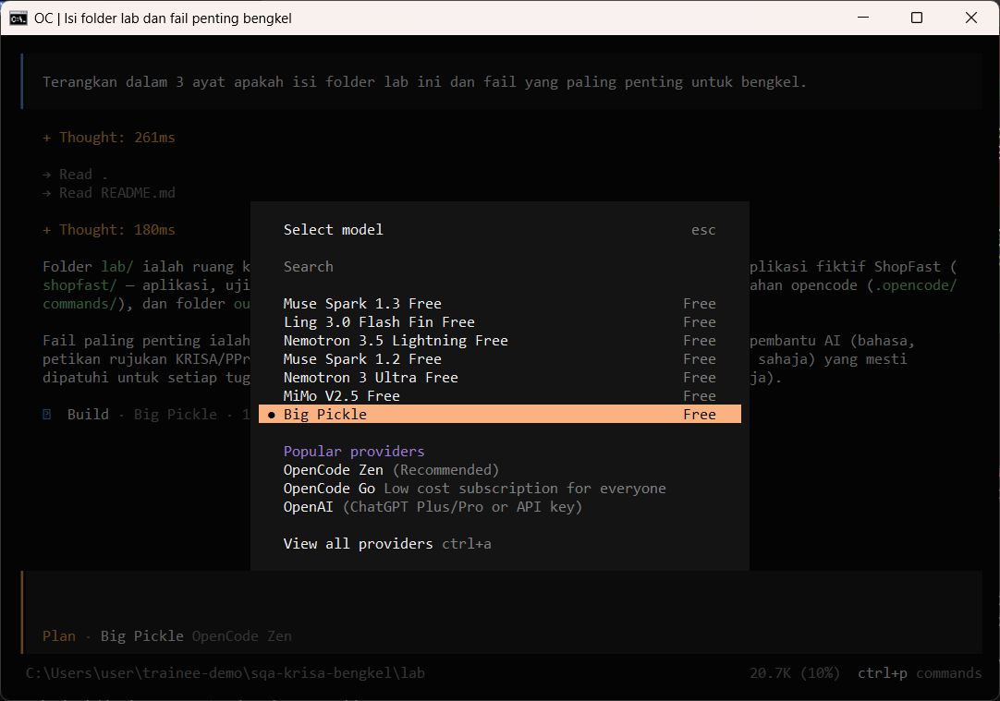
Mulakan baris dengan ! untuk menjalankan arahan terminal tanpa keluar dari opencode.
Start a line with ! to run a terminal command without leaving opencode.
!git status
{kind=link}
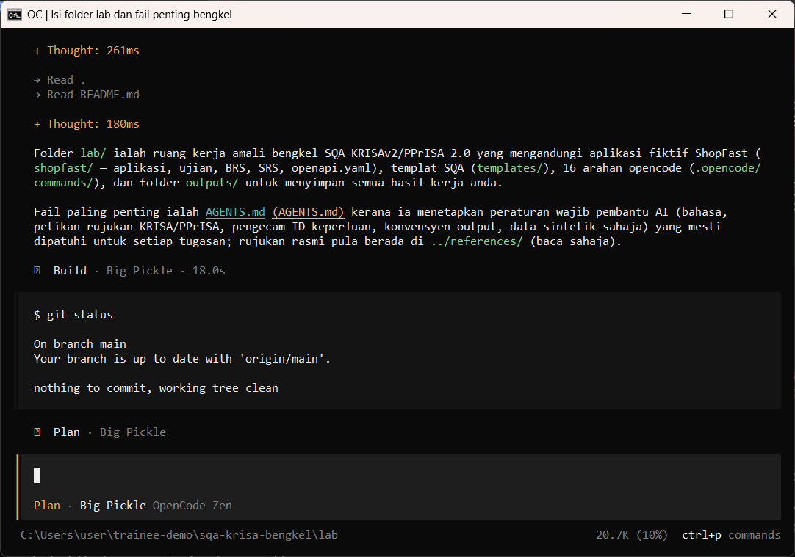
Semakan manusia / Human check
- check-lab.ps1 menunjukkan SEMUA OK
check-lab.ps1 shows all OK - opencode --version memaparkan 1.18.x
opencode --version prints 1.18.x - Baris status memaparkan Big Pickle, OpenCode Zen
The status line shows Big Pickle, OpenCode Zen
Contoh output sebenar
- Tiada fail output untuk langkah ini.
Jawapan AI berbeza setiap larian. Bandingkan struktur dan semak kandungan.
Jika ada masalah / Troubleshooting
| Masalah | Tindakan |
|---|---|
| opencode is not recognised | Close and reopen PowerShell so PATH refreshes. Still failing: powershell -ExecutionPolicy Bypass -File .\setup\install-opencode.ps1 -Portable |
| Scripts are disabled on this system | Set-ExecutionPolicy -Scope CurrentUser RemoteSigned, or run opencode.cmd instead of opencode |
| The model is slow or stops | Wait up to 2 minutes. Press Esc to interrupt, then send the prompt again. Try another free model with /models |
| Permission required dialog | Read the preview. Choose Allow once for files in outputs/. Reject anything outside the lab folder |
| File or command not found | Check the status bar path ends with \lab. Commands and @files are relative to the lab folder |
| Answer uses Indonesian words or dashes | Reply: Ikut AGENTS.md peraturan 1 dan 14, tulis semula dalam Bahasa Melayu Malaysia |
| Network or proxy error | $env:HTTPS_PROXY = "http://proxy:port" and $env:NO_PROXY = "localhost,127.0.0.1" before starting opencode |
| Port 3000 already in use | $env:PORT = 3001 before npm start, and use http://localhost:3001 |